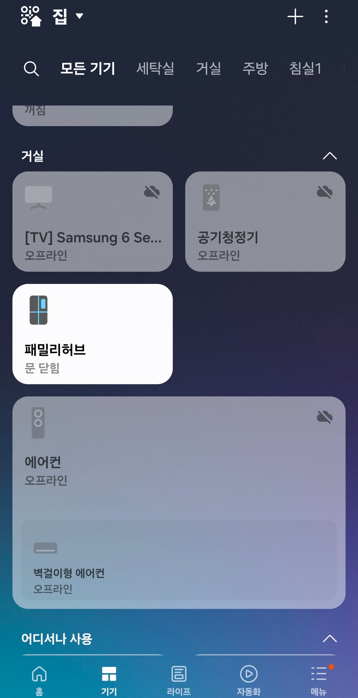

질문 못받는다

질문 못받는다
다음 신제품은 펌웨어 복구기능 좀 추가하겠네
꼴랑 200짜리 냉장고 사서
식재료 보상까지 바라는건 좀ㅋㅋ
냉장보관 의약품도 있고 회사 과실로 음식 쓰레기까지 생겨서 명절에 처리 까지 해야 하는데 이새끼는 집에 냉장고가 없나보네
업소용쓰는 시설에 살아서 좋겟다
ㅋㅋㅋㅋㅋㅋㅋㅋㅋㅋㅋㅋㅋㅋ 고급지게 표현 잘하시네요 굳
CPU쿨러 나 파워에서 뻑나서 컴퓨터 전체나가도
몇십짜리사서 다른부품 보상바라는건좀ㅋㅋ
할껀가보네
200만원짜리 냉장고에 열등감 표출은 좀 무섭네

제일문제가 펌워어같은 소프트웨어가 뻑낫는데
냉장고자체가 벽돌된다는게 문제지
이정도면 설계미스 수준인데
세탁기나 다른것처럼 껏다켯다하는 제품도아니고
24시간 돌아가야하는 제품이 소프트웨어로 제품자체가
작동안되는거면 좀 문제 있는거라고봄
적어도 우회해서 기본값으로 작동은 되게 만들어야지...
소프트웨어가 크게중요한 제품도아니고
실수한사람 등골 서늘하겠네
천궁냉장고
라데온 냉장고